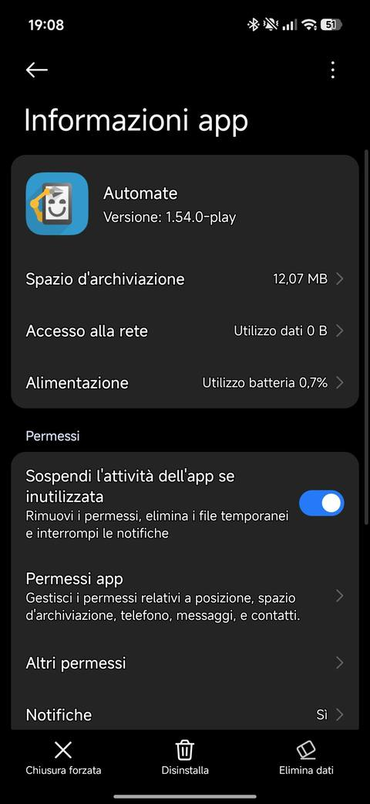
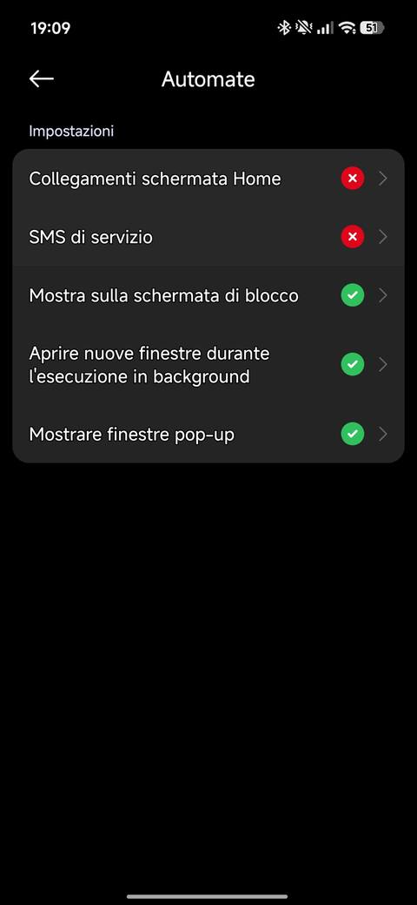
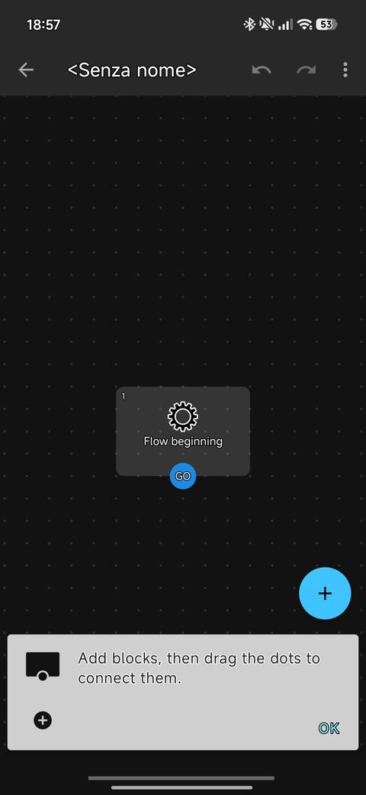
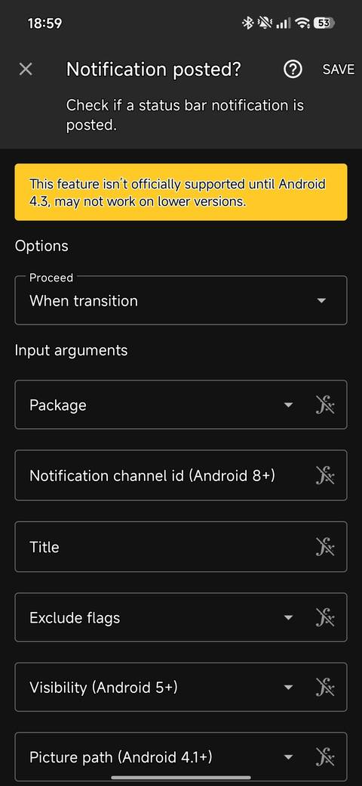
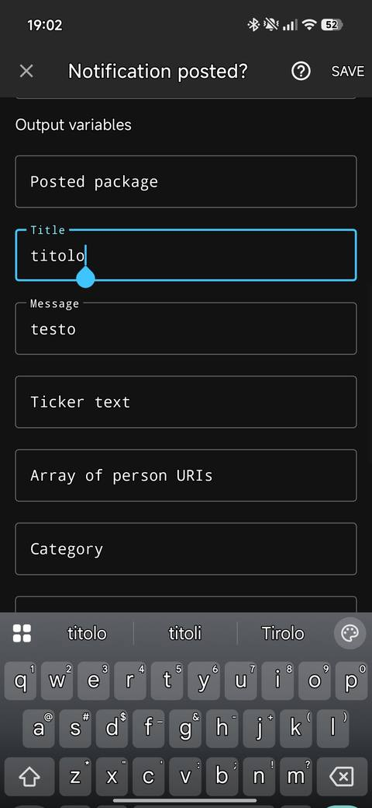
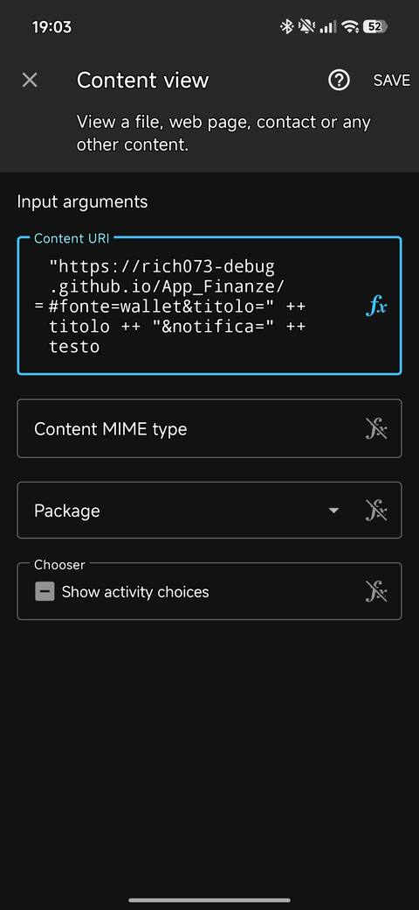
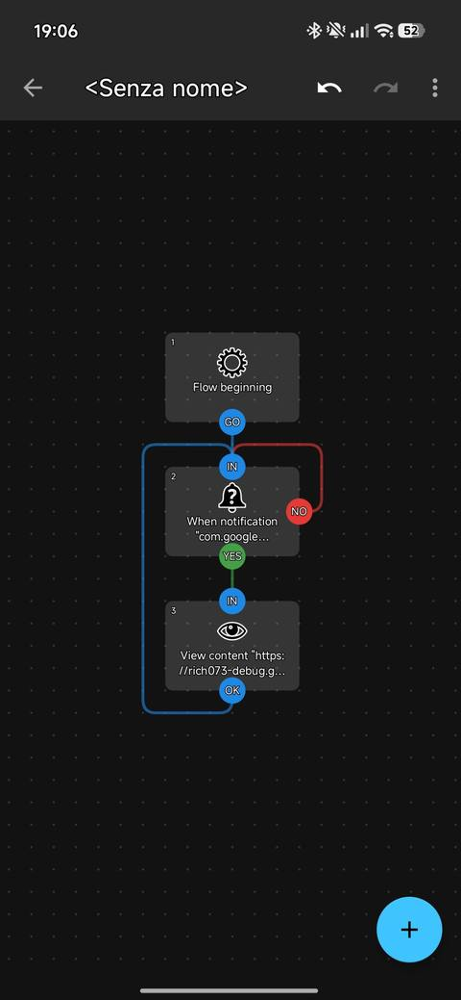
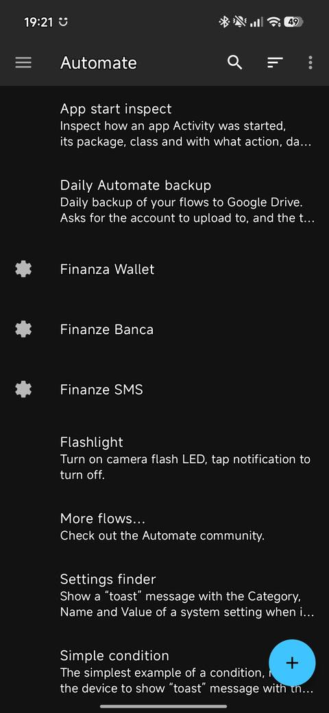

Guida App Finanze
Come installare l'app, collegarla alle notifiche dei pagamenti con Automate e usarla ogni giorno. Serve un telefono Android con Chrome.
Apri l'app Finanze1. Installare l'app
L'app non si scarica dal Play Store: si apre da questo link e si aggiunge alla schermata Home.
Link dell'app: https://rich073-debug.github.io/App_Finanze/
- Apri il link con Chrome (non con altri browser: i dati resterebbero separati).
- Tocca i tre puntini in alto a destra.
- Scegli Aggiungi a schermata Home oppure Installa app, poi conferma.
- Sulla Home compare l'icona verde Finanze: da ora aprila sempre da lì, a schermo intero come un'app normale.
Primo avvio. L'app chiede lo stipendio fisso, la data e l'importo dell'ultimo stipendio e, facoltativo, quanto hai già speso da quel giorno (esclusi i fissi). Poi completa:
- Fisse → aggiungi le spese mensili (mutuo, finanziamento, abbonamenti, PAC…) con importo e giorno del mese (31 = fine mese).
- Fisse → aggiungi le scadenze annuali (bollo, assicurazione, revisione) con importo e data: l'app mette da parte una quota ogni mese.
- Impostazioni → indica il conto principale e le ultime cifre delle carte che usi; aggiungi gli altri conti (risparmi, vacanze, prepagate), i cui movimenti non pesano sul budget.
- Impostazioni → Sicurezza → attiva il PIN e l'impronta.
I dati restano solo sul tuo telefono: nessun altro li vede, nemmeno chi usa la stessa app.
Bloccato in questa fase? Copia questo testo in un'IA (Claude, ChatGPT, Gemini), completa le parti tra parentesi e allega uno screenshot:
Aiutami a installare una web app sul mio telefono Android. Sono poco pratico: rispondi in italiano semplice, dammi UN passo alla volta e chiedimi uno screenshot prima di andare avanti.
L'app si chiama Finanze e non si scarica dal Play Store: si apre dal link https://rich073-debug.github.io/App_Finanze/ con Chrome e si aggiunge alla schermata Home dal menu con i tre puntini ("Aggiungi a schermata Home" o "Installa app"). Deve aprirsi sempre con Chrome, non con altri browser.
Il mio telefono e': [marca e modello]
Mi sono bloccato qui: [descrivi cosa vedi]2. Scaricare Automate e dare i permessi
Automate (di LlamaLab) è un'app gratuita che legge le notifiche dei pagamenti e le passa all'app Finanze, così le spese si registrano da sole. Funziona con piccoli schemi a blocchi, chiamati flussi: è più intuitiva di quanto sembri. Senza Automate l'app Finanze funziona lo stesso, ma le spese si inseriscono a mano.
- Installa Automate dal Play Store: lo sviluppatore deve essere LlamaLab.
- Aprila e salta pure la guida introduttiva.
- I permessi principali li chiede Automate da solo quando avvii il primo flusso (capitolo 3). Concedi accesso alle notifiche e Mostra sopra altre app.
- Non attivare l'Accessibilità ("Usa Automate" nella pagina Accessibilità): dà un controllo molto ampio sul telefono e ai nostri flussi non serve.
Impostazioni del telefono (Impostazioni → App → Gestisci app → Automate):
- Alimentazione → Nessuna restrizione.
- Sospendi l'attività dell'app se inutilizzata → spento (altrimenti dopo qualche settimana Android toglie i permessi).
- Altri permessi → attiva Aprire nuove finestre durante l'esecuzione in background e Mostrare finestre pop-up: servono ad aprire l'app Finanze anche a telefono in tasca.
- Avvio automatico, se c'è (su alcune versioni di HyperOS non esiste più).
- Su Xiaomi, Redmi e POCO: nelle app recenti tieni premuta la scheda di Automate e tocca il lucchetto.
Dentro Automate: menu ☰ → Settings → spunta Run on system startup, così i flussi ripartono da soli quando riaccendi il telefono.


Bloccato in questa fase? Copia questo testo in un'IA e allega uno screenshot:
Aiutami a dare i permessi giusti all'app Automate (di LlamaLab) sul mio telefono Android. Sono poco pratico: rispondi in italiano semplice, dammi UN passo alla volta, indica i pulsanti con il nome esatto che vedo e chiedimi uno screenshot prima di andare avanti. Mi servono: 1. Accesso alle notifiche per Automate e "Mostra sopra altre app" (di solito li chiede Automate stesso quando avvio un flusso). 2. Alimentazione/Batteria "Nessuna restrizione" per Automate e "Sospendi l'attivita' dell'app se inutilizzata" spento. 3. Se il telefono e' Xiaomi, Redmi o POCO (HyperOS): in "Altri permessi" attivi "Aprire nuove finestre durante l'esecuzione in background" e "Mostrare finestre pop-up"; "Avvio automatico" se esiste; lucchetto sulla scheda di Automate nelle app recenti. 4. In Automate: menu > Settings > "Run on system startup" spuntato. L'Accessibilita' NON serve: non attivarla. Il mio telefono e': [marca e modello] Mi sono bloccato qui: [descrivi cosa vedi]
3. Creare i flussi automatici
Servono tre flussi, uno per ogni app che manda notifiche di pagamento. Si fa il primo per intero; gli altri due si copiano e si cambiano due cose.
| Flusso | Package (app da ascoltare) | Title (input) | Nell'indirizzo |
|---|---|---|---|
| Finanze Wallet | Google Wallet | vuoto | fonte=wallet |
| Finanze Banca | l'app della tua banca | vuoto | fonte=banca |
| Finanze SMS | Messaggi | *NomeBanca* | fonte=sms |
Flusso 1: Finanze Wallet
- In Automate tocca il + per creare un nuovo flusso: compare un solo blocco, Flow beginning.
- Tocca il + azzurro, cerca con la lente
notificatione scegli Notification posted?. Trascinalo sotto al primo blocco e toccalo. - Compila così:
- Proceed: lascia When transition;
- Package: freccetta ▼ → Google Wallet;
- più in basso, in Output variables: Title =
titolo, Message =testo(minuscolo, senza spazi); - tutto il resto vuoto. Premi SAVE.
- Tocca il +, cerca
content viewe scegli Content view. Mettilo sotto e toccalo. - Nella casella Content URI tocca il simbolo fx (si accende) e incolla tutto su una riga:
In Package scegli Chrome. Premi SAVE.
"https://rich073-debug.github.io/App_Finanze/#fonte=wallet&titolo=" ++ titolo ++ "¬ifica=" ++ testo
- Collega i blocchi trascinando i pallini:
- GO (Flow beginning) → Notification posted?
- YES (Notification posted?) → Content view
- OK (Content view) → di nuovo Notification posted?
- NO (Notification posted?) → su sé stesso
- Tocca il nome in alto e chiamalo
Finanze Wallet. Torna indietro, apri il flusso e premi Start. Concedi i permessi richiesti.





Flusso 2: Finanze Banca
- Nell'elenco tieni premuto su Finanze Wallet → Duplicate. Rinomina la copia
Finanze Banca. - Notification posted? → Package: l'app della tua banca (nell'esempio, Inbank). SAVE.
- Content view → nell'indirizzo cambia
fonte=walletinfonte=banca. SAVE. - Premi Start.
Flusso 3: Finanze SMS
- Duplica Finanze Banca e rinominalo
Finanze SMS. - Notification posted? → Package: Messaggi. Nella casella Title in alto (tra gli Input arguments, non tra le Output variables) scrivi il nome della banca tra asterischi, per esempio
*Inbank*: così il flusso reagisce solo agli SMS della banca. SAVE. - Content view → cambia
fonte=bancainfonte=sms. SAVE e Start.
Alla fine, nell'elenco di Automate, i tre flussi hanno a sinistra una rotellina: vuol dire che sono avviati e aspettano le notifiche.

La prova. Al primo pagamento con il telefono si apre da sola l'app Finanze con "✓ … — oggi ti restano …". Se paghi con la carta fisica e la notifica della banca non contiene l'importo, l'app te lo chiede. Controlla in Movimenti che la spesa compaia una sola volta.
Altre banche. La lettura delle notifiche è stata provata con Inbank. Con un'altra banca, se la notifica contiene l'importo in euro di solito funziona; dopo il primo pagamento controlla in Impostazioni → Ultime notifiche ricevute.
Bloccato in questa fase? Copia questo testo in un'IA e allega uno screenshot:
Aiutami a creare dei flussi nell'app Automate (di LlamaLab) sul mio telefono Android. Sono poco pratico: rispondi in italiano semplice, dammi UN passo alla volta, indica i pulsanti con il nome esatto che vedo e chiedimi uno screenshot prima di andare avanti. Ogni flusso ha 3 blocchi: 1. "Flow beginning" (c'e' gia'). 2. "Notification posted?": Proceed = When transition; Package = l'app da ascoltare; Output variables: Title = titolo, Message = testo. 3. "Content view": nella casella Content URI, con il simbolo fx acceso, l'espressione "https://rich073-debug.github.io/App_Finanze/#fonte=FONTE&titolo=" ++ titolo ++ "¬ifica=" ++ testo e Package = Chrome. Collegamenti: GO -> Notification posted?; YES -> Content view; OK di Content view -> di nuovo Notification posted?; NO di Notification posted? -> su se stesso. I flussi: 1. Finanze Wallet: Package Google Wallet, FONTE = wallet. 2. Finanze Banca: Package = l'app della mia banca, FONTE = banca. 3. Finanze SMS: Package Messaggi, Title (input) = *NomeBanca* con gli asterischi, FONTE = sms. Il 2 e il 3 si fanno duplicando il primo (tieni premuto > Duplicate). Ogni flusso va avviato con Start: nell'elenco deve comparire una rotellina a sinistra. La mia banca e': [nome banca e nome della sua app] Mi sono bloccato qui: [descrivi cosa vedi]
4. Se qualcosa non funziona dopo
Ogni fase qui sopra ha il suo prompt per chi si blocca durante la configurazione. Questo serve dopo, quando è tutto configurato ma un pagamento non viene registrato, compare due volte o l'importo è sbagliato. Prima apri l'app → Impostazioni → Ultime notifiche ricevute e fai uno screenshot: mostra il testo arrivato e cosa ne ha fatto l'app. Non inviare mai numeri completi di carte, PIN o password.
Aiutami a capire perche' un'automazione non funziona. Sono poco pratico: rispondi in italiano semplice e dammi UN controllo alla volta. Come funziona il sistema: sul mio telefono Android l'app Automate (di LlamaLab) ha tre flussi che ascoltano le notifiche di Google Wallet, della mia banca e dell'app Messaggi. Quando arriva un pagamento il blocco "Content view" apre l'app web Finanze (https://rich073-debug.github.io/App_Finanze/ , in Chrome) con un indirizzo che contiene il testo della notifica dopo il simbolo #. L'app legge importo e negozio e registra la spesa. Se la notifica della banca non contiene l'importo, l'app lo chiede. Se Wallet e banca avvisano per lo stesso pagamento, l'app salta il doppione. Cose da controllare in ordine: 1. In Automate i flussi hanno la rotellina a sinistra (avviati). Se no, aprirli e premere Start. 2. Automate ha ancora accesso alle notifiche, "Mostra sopra altre app", batteria "Nessuna restrizione" e "Sospendi se inutilizzata" spento (su Xiaomi anche "Aprire nuove finestre in background" e lucchetto nelle app recenti). 3. Nel blocco "Notification posted?" e' scelta l'app giusta (Package). 4. I link si aprono in Chrome. 5. Nell'app Finanze, Impostazioni > "Ultime notifiche ricevute" mostra la notifica e l'esito. Se l'importo non viene riconosciuto con la mia banca, aiutami a descrivere il problema con il testo esatto della notifica (senza dati sensibili) da girare a chi gestisce l'app. La mia banca e': [nome] Il problema: [cosa succede o cosa non succede]
Allega sempre lo screenshot di Ultime notifiche ricevute e, se c'è, quello della notifica originale.
5. Come funziona e a cosa serve
L'app ti dice ogni giorno quanto puoi spendere senza intaccare spese fisse, scadenze e risparmi. Il numero grande nella schermata Oggi è tutto quello che serve guardare.
Il calcolo. Il periodo va dall'arrivo dello stipendio al giorno 21 del mese dopo (modificabile in Impostazioni), così resti coperto anche se lo stipendio arriva tardi:
Se oggi spendi meno, domani hai un po' di più; se sfori, i giorni successivi si abbassano.
Cosa succede quando paghi.
- Paghi con il telefono: Google Wallet manda la notifica, Automate apre l'app e la spesa è registrata con importo e negozio.
- Paghi con la carta fisica: la notifica della banca non sempre contiene l'importo, quindi l'app te lo chiede.
- Se banca e Wallet avvisano per lo stesso pagamento, l'app riconosce il doppione e lo salta.
- Contanti: tocca + Spesa oppure Detta e di' l'importo. Tenendo premuta l'icona trovi le scorciatoie.
- Arriva lo stipendio: l'app propone di aprire il nuovo periodo e mette da parte le quote per le scadenze.
Le sezioni.
- Oggi: budget del giorno, riepilogo del periodo, soldi messi da parte per le spese future, soldi da spostare sui conti di risparmio, quanto deve restare sul conto principale, previsioni (prossimo rifornimento, scadenze in arrivo).
- Movimenti: tutte le spese per giorno e per categoria; tocca una spesa per correggerla o eliminarla.
- Fisse: spese mensili, scadenze annuali con accantonamento, entrate extra (trasferte, lavori occasionali).
- Impostazioni: stipendio, obiettivo di risparmio diviso per conto, conti e carte, sicurezza, backup, aggiornamenti.
Perché è utile.
- Sai sempre quanto puoi spendere oggi, senza fare conti.
- Bollo e assicurazione non arrivano più come una botta: i soldi sono già da parte.
- Il risparmio è deciso a inizio periodo, non "quello che avanza".
- Dopo qualche rifornimento l'app stima quando servirà il prossimo pieno e quanto costerà.
Sicurezza e backup. Con PIN e impronta solo tu apri l'app; le spese dalle notifiche si registrano anche ad app bloccata. All'inizio di ogni mese l'app propone il backup: salvalo su Google Drive, così non perdi nulla se cambi o perdi il telefono.
Apri l'app Finanze